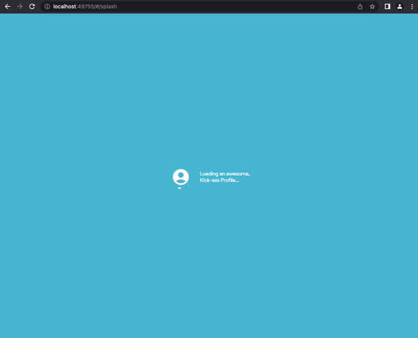

Welcome to the exciting world of Flutter Web!
Flutter is an open-source UI Toolkit supported by Google for building beautiful, natively-compiled user interfaces in a multi-platform fashion, using Dart, another open-source programming language supported by Google, as its core language.
Flutter for Web provides the lowest barrier to entry when it comes to becoming a profilic Flutter developer. Most of the concepts learned in Flutter can be applied in a multi-platform scenario, and web is not an exception, so join us in building compelling web apps by going through the codelabs in this series.
NOTE: THIS IS NOT A BEGINNER CODELAB
(If you're looking for more beginner content, please visit some of my other codelabs here). If you're up for the challenge, then proceed.
This is a codelab series focused on Flutter Web, in which you'll learn the following:
- Building Layouts in Flutter
- Adding Custom Fonts
- Page Navigation and Nested Navigation using GoRouter
- Animations (Flutter and External Libraries (i.e. Rive))
- State Management using Riverpod
- Persisting state in Local Storage
- Responsive UI
- Firebase Integration:
- Deploy your web apps using Firebase Hosting
- Pull data for your web apps from Firebase Cloud Firestore
The following screenshots depict what we'll be building throughout this series:
- A Flutter Web App for your own Personal Portfolio
- Shows a brief profile information
- Contains pages for the major social media platforms and professional content portals (Twitter, LinkedIn, Github) and for showcasing your web presence
- Customized and engaging visuals for each page
- Stores and persists the last selected option
- Stores the page content on the cloud using Cloud Firestore
- Accesible anywhere thanks to Firebase Hosting
Are you ready??? Hit Next to proceed.

Knowlege requirements
- Basic knowledge in Flutter is required (i.e. know what a widget is, have tried your hand at a "Hello World" project in Flutter). Programming knowledge required, on any object-oriented language a plus.
Tool / Software requirements
- Install the Flutter SDK
- Install Visual Studio Code
- Have the NPM Package Manager installed (for installing the Firebase CLI tools later on)
- Have Chrome browser installed
Once Flutter is installed on your machine, let's create your first Flutter project. Navigate to the folder in which this project will live.
Once inside the folder, from a terminal or from VS Code's terminal, execute the command flutter create PROJECT_NAME, as such:
flutter create PROJECT_NAME
This will instruct the framework to generate a startup Flutter project with all the minimum requirements to start up.
You will have a folder named PROJECT_NAME or whatever name you pick (in my case I'll call it roman_web_portfolio); make sure to navigate inside this folder; the rest of the steps will depend on you being at the root of your project. You can do cd PROJECT_NAME or re-open VSCode with this folder as the root of your environment.
From the generated files, navigate to the main.dart file. There's a bunch of boilerplate code; for now let's just test that things are running fine.
Go ahead and execute the command flutter run -d chrome at the root of your project. This will instruct Flutter to run your project, using Chrome browser as your target device (hence the -d flag):
flutter run -d chrome
Make sure you can see the default counter sample app:

Looking good! Click on the floating button and check that the counter in the middle of the screen goes up, just as a sanity check. If so, your project is set up, Flutter is running well - ready for the next step! Hit Next when ready.
Good organization on your project goes a long way, so let's start by setting the foundation of this project, starting by a folder structure that makes sense for this web app. I'll follow this convention even though this is a small web app, but it can grow later.
- At the root of the project (inside your project name - for me, roman_web_portfolio) add a new folder called assets with the following subfolders:
- assets
- images: for my image assets
- fonts: for my custom fonts and icon fonts
- anims: for my animations (i.e. Rive files)
- Inside the existing lib folder, at the same level as my main.dart file, create the following:
- lib
- features: a folder for all the features in this web app. We'll be using a feature-first approach as opposed to layer-first approach. Each feature in turn will contain the following structure:
- first, a folder with the name of the feature (i.e. navigation), and inside:
- FEATURE_NAME (i.e. landing, welcome, navigation)
- presentation: a folder that will hold all presentation-related entities
- pages: page-level widgets that take up the whole screen
- widgets: small-level widgets used by the page-level widgets
- providers: the providers that feed functionality to the widgets and pages
- viewmodels: hold the glue that binds the models and the views and provide functionality to the views
- data
- models: contain the "PODO" (Plain Ol' Dart Objects) that represent the data
- repositories: contain the classes that perform data retrieval and accessing the data on behalf of providers and viewmodels
- presentation: a folder that will hold all presentation-related entities
- shared: a folder for shared entities and widgets used throughout the app
- helpers: for utility classes, helper methods, enums, etc.
- services: common services used throughout the application
- routes: for my application routes
- styles: for application-wide styles used (colors, fonts, etc.)
- features: a folder for all the features in this web app. We'll be using a feature-first approach as opposed to layer-first approach. Each feature in turn will contain the following structure:
Confirm that your project structure looks like this and proceed to the next step.
Adding Colors
We need to set up some of the plumbing that powers this web app, so we'll start by adding some of the colors required by this web app. Create a class call PersonalPortfolioColors as a class that will hold all colors used throughout this app.
Go to the styles folder, add a file called colors.dart and add the following class (add the required imports):
import 'package:flutter/material.dart';
class PersonalPortfolioColors {
// for the dark theme
static const Color mainBlue = Color(0xFF51BFD7);
static const Color secondaryBlue = Color(0XFF1E6B7C);
static const Color lightBlue = Color(0xFF5DD1EB);
static const Color textColor = Colors.white;
static const Color primaryDark = Color(0xFF1F6D7E);
static const Color lightLabel = Color(0xFFD5F4FB);
static const Color errorIcon = Color(0xFFFFB5B5);
static const Color errorBgTop = Color(0xFFCC2B2B);
static const Color errorBgBottom = Color(0xFF750E0E);
// per page
// welcome
static const Color welcomeIcon = Color(0xFFFFF1BF);
static const Color welcomePrimary = Color(0xFFF2C41C);
static const Color welcomeSecondary = Color(0xE76B4E00);
// twitter:
static const Color twitterIcon = Color(0xFF72C9FF);
static const Color twitterPrimary = Color(0xFF1CA1F2);
static const Color twitterSecondary = Color(0xFF0C75B6);
// linkedin
static const Color linkedInIcon = Color(0xFF23B2FF);
static const Color linkedInPrimary = Color(0xFF0077B5);
static const Color linkedInSecondary = Color(0xFF004D76);
// web
static const Color webIcon = Color(0xFFD382FF);
static const Color webPrimary = Color(0xFF8C00D7);
static const Color webSecondary = Color(0xFF4D0076);
// github
static const Color githubIcon = Color(0xFFBEBEBE);
static const Color githubPrimary = Color(0xFF6C6C6C);
static const Color githubSecondary = Color(0xFF3B3B3B);
}
Adding Custom Fonts
We'll be using our own custom fonts as we want to make this app more unique and personal. We'll also add our own custom icon fonts as well.
Download this zip file which contains all custom fonts we'll use throughout the app. Grab all the .ttf file, and drop them inside the assets/fonts folder.
Configure the pubspec.yaml to support the fonts just imported:
//... in the pubspec.yaml, under the 'flutter' section:
fonts:
- family: PersonalPortfolioIcons
fonts:
- asset: assets/fonts/PersonalPortfolioIcons.ttf
- family: Product Sans
fonts:
- asset: assets/fonts/Product Sans Regular.ttf
- asset: assets/fonts/Product Sans Bold.ttf
weight: 900
- asset: assets/fonts/Product Sans Italic.ttf
style: italic
Go to the styles folder and add a file called personal_portfolio_icons.dart and add the following code:
import 'package:flutter/material.dart';
class PersonalPortfolioIcons {
PersonalPortfolioIcons._();
static const _kFontFam = 'PersonalPortfolioIcons';
static const String? _kFontPkg = null;
static Map<String, IconData> iconMap = {
'badge': badge,
'email': email,
'github': github,
'linkedin': linkedin,
'qrcode': qrcode,
'twitter': twitter,
'user': user,
'wave': wave,
'web': web
};
static const IconData badge = IconData(0xe800, fontFamily: _kFontFam, fontPackage: _kFontPkg);
static const IconData email = IconData(0xe801, fontFamily: _kFontFam, fontPackage: _kFontPkg);
static const IconData github = IconData(0xe802, fontFamily: _kFontFam, fontPackage: _kFontPkg);
static const IconData linkedin = IconData(0xe803, fontFamily: _kFontFam, fontPackage: _kFontPkg);
static const IconData qrcode = IconData(0xe804, fontFamily: _kFontFam, fontPackage: _kFontPkg);
static const IconData twitter = IconData(0xe805, fontFamily: _kFontFam, fontPackage: _kFontPkg);
static const IconData user = IconData(0xe806, fontFamily: _kFontFam, fontPackage: _kFontPkg);
static const IconData wave = IconData(0xe807, fontFamily: _kFontFam, fontPackage: _kFontPkg);
static const IconData web = IconData(0xe808, fontFamily: _kFontFam, fontPackage: _kFontPkg);
static IconData iconFromName(String icon) {
return iconMap[icon] ?? Icons.abc;
}
}
Clean up the main.dart file
The main.dart file currently has a bunch of boilerplate code. Let's replace all that by creating a root widget app called PortfolioApp that encapsulates a MaterialApp widget with the following properties set:
- title: ‘Portfolio App'
- theme: A ThemeData instance with the fontFamily property set to Product Sans (as one of the fonts imported)
- home: a placeholder SizedBox widget for now
Your newly updated main.dart file should look like this:
import 'package:flutter/material.dart';
void main() {
runApp(const PortfolioApp());
}
class PortfolioApp extends StatelessWidget {
const PortfolioApp({super.key});
// This widget is the root of your application.
@override
Widget build(BuildContext context) {
return MaterialApp(
title: 'Portfolio App',
debugShowCheckedModeBanner: false,
theme: ThemeData(
fontFamily: 'Product Sans',
),
home: const SizedBox.shrink()
);
}
}
Rebuild the App
Make sure to rebuild your app (do a full restart) before proceeding - we've added a bunch of files and code so the app is due for a refresh. You won't see anything until the end of the next section, so be patient and carry on!
We'll start by creating our first feature - a way to display a splash screen prior to loading the whole app. We'll use it later in the series for doing preloading of data and such.
This is what we'll end up with:
Create the Splash feature structure
Under the features folder, add a splash folder, with the following subfolders and files:
- presentation
- pages
- splash.page.dart: This will represent the page-level widget that will hold the splash screen
- widgets
- splash_loading.dart: This will be a widget that will hold the loading portion of the splash page.
- pages
Building the Splash Page
In the splash.page.dart file, create a StatelessWidget class called SplashPage, with a Scaffold containing a background Color, and a Container placeholder as its body:
import 'package:flutter/material.dart';
import 'package:roman_web_portfolio/styles/colors.dart';
class SplashPage extends StatelessWidget {
static const String route = '/splash';
const SplashPage({super.key});
@override
Widget build(BuildContext context) {
return Scaffold(
backgroundColor: PersonalPortfolioColors.mainBlue,
body: Container()
);
}
}
Proceed now to create the widget that will represent the loading portion of this page; you will see later why we're splitting it into a separate widget.
Go to the splash feature again, and in the presentation/widgets folder, inside the splash_loading.dart file, add another StatelessWidget class called SplashLoading that takes a message String as input, and we'll follow the schematics below:
The widget should look like this:
import 'package:flutter/material.dart';
class SplashLoading extends StatelessWidget {
final String message;
const SplashLoading({
super.key,
required this.message
});
@override
Widget build(BuildContext context) {
return Center(
child: Row(
mainAxisSize: MainAxisSize.min,
children: [
SizedBox(
width: 60,
height: 60,
child: Stack(
children: const [
Center(
child: Icon(
Icons.account_circle,
color: Colors.white,
size: 50
)
),
Center(
child: SizedBox(
width: 60,
height: 60,
child: CircularProgressIndicator(
valueColor: AlwaysStoppedAnimation(Colors.white),
),
),
)
],
)
),
const SizedBox(width: 20),
Text(message,
style: const TextStyle(color: Colors.white)
)
]
)
);
}
}
Now let's consume this widget back in the SplashPage page widget by dropping it right in the body of the Scaffold widget, as such (add the necessary imports):
//... splash.page.dart
//... rest of the code omitted for brevity
@override
Widget build(BuildContext context) {
return const Scaffold(
backgroundColor: PersonalPortfolioColors.mainBlue,
body: SplashLoading(
message: 'Loading an awesome,\nKick-ass Profile...'
)
);
}
Now that we have the page ready to be seen, go to the main.dart file and let's just check whether things are falling into place; replace the existing SizedBox widget from the body of the MaterialApp widget by our newly created SplashPage - just to see how it looks:
//... main.dart
//... rest of the code omitted for brevity
// This widget is the root of your application.
@override
Widget build(BuildContext context) {
return MaterialApp(
title: 'Portfolio App',
debugShowCheckedModeBanner: false,
theme: ThemeData(
fontFamily: 'Product Sans',
),
home: const SplashPage()
);
}
Rebuild the app and reload the browser; with that change you should see the splash page in its full glory being displayed on the page - congrats if you made it this far!
Let's proceed and set up the routing since we'll use named routes and the GoRouter package for performing navigation throughout this web app.
The navigation strategy for this app will be as follows:
- a root navigation for the splash screen and the main screen
- a nested navigation within main to allow users to navigate between the many sections available
- a navigation rail will be created that will allow users to select the nested page to go to
- an error page (for erroneous pages)
The package we'll use is Go_Router supported by the Flutter team at Google, which is a declarative routing package for Flutter that uses the Router API to provide a convenient, url-based API for navigating between different screens. You can define URL patterns, navigate using a URL, handle deep links, and a number of other navigation-related scenarios.
Following that declarative aspect, we'll go ahead and create a file that will encapsulate the routes.
Start by creating a utilities class that will hold some unique keys that our navigation will require so we can refer to it programmamtically throughout the app.
Create a file called utils.dart in the lib/helpers folder. This class will contain three important Global keys. Global keys are used to uniquely identify elements in the widget tree, whcih provide you access to their state, therefore we'll use them to refer to the navigation and the main scaffold on this app.
utils.dart
import 'package:flutter/material.dart';
class Utils {
static GlobalKey<NavigatorState> mainNav = GlobalKey();
static GlobalKey<NavigatorState> tabNav = GlobalKey();
static GlobalKey<ScaffoldState> mainScaffold = GlobalKey();
}
Import the go_router package into your app via the flutter pub add go_router, which fetches it from *pub.dev and installs it onto your app. Execute the following command:
flutter pub add go_router
Create a file called app_routes.dart inside the lib/routes folder, and add the initial configuration for our application navigation route strategy, as follows:
import 'package:go_router/go_router.dart';
import 'package:roman_web_portfolio/features/splash/presentation/pages/splash.page.dart';
import 'package:roman_web_portfolio/helpers/utils.dart';
class AppRoutes {
static final router = GoRouter(
initialLocation: SplashPage.route,
navigatorKey: Utils.mainNav,
routes: [
GoRoute(
parentNavigatorKey: Utils.mainNav,
path: SplashPage.route,
builder: (context, state) => const SplashPage(),
),
]
);
}
Let's dissect this code.
We create a static final instance of GoRouter, and pass the following initialization arguments:
- initialLocation: the initial location from where the app should launch; in this case, the splash page screen, denoted by the SplashPage.route property.
- navigatorKey: refers to the previously created Global key called mainNav for us to refer to the root navigation programmaticaly throughout our app
- routes: an array containing the many routes our app will be able to navigate the users to. For now, we've created our first route, an instance of GoRoute with the following arguments:
- parentNavigatorKey: the key corresponding to the parent navigation key (in our case, the same mainNav)
- path: the path that will resolve when users invoke a particular page. In our case, if the user doesn't put anything, it will return this page by default.
- builder: the builder method that will render the corresponding page widget to be returned upon the user invoking this route / path. In our case, the SplashPage will return, therefore when a request for this route is received, this method builds a widget and returns it.
Every page that needs to be navigated to MUST have a GoRoute route instance inside the routes array for this to work.
Integrate the GoRouter navigation into our app.
Let's do some refactoring to integrate GoRouter to the app.
Back on the main.dart file, refactor the MaterialApp widget and replace the default constructor by the MaterialApp.router constructor. Remove the home parameter since we won't be hardcoding the home page, but be fed by the router configuration available in the AppRoutes.router instance created earlier, and add the following parameters to it. Make sure to import the AppRoutes class:
//... main.dart
//... rest of the code
// This widget is the root of your application.
@override
Widget build(BuildContext context) {
return MaterialApp.router(
title: 'Portfolio App',
theme: ThemeData(
fontFamily: 'Product Sans',
),
debugShowCheckedModeBanner: false,
routeInformationProvider: AppRoutes.router.routeInformationProvider,
routeInformationParser: AppRoutes.router.routeInformationParser,
routerDelegate: AppRoutes.router.routerDelegate,
);
}
//...
Notice the routeInformationProvider, routeInformationParser, and the routerDelegate are the hooks required to be added at the MaterialApp level to incorporate the navigation at the root level.
Test that the navigation integration was successful by just running the app again (flutter run -d chrome) and you should see the same splash page, but now being served by the go_router implementation. Nice!
When ready, hit Next to proceed.
In the next section we'll tackle simulating a delay and navigating to the next page afterwards.
Create a feature folder called shell, and under it, the corresponding presentation/pages subfolders. Inside the pages subfolder, a file called portfoliomain.page.dart and add a class called PortFolioMainPage with the following content:
import 'package:flutter/material.dart';
import 'package:roman_web_portfolio/helpers/utils.dart';
class PortfolioMainPage extends StatelessWidget {
static const String route = '/main';
const PortfolioMainPage({super.key});
@override
Widget build(BuildContext context) {
return Scaffold(
key: Utils.mainScaffold,
body: const Center(
child: Text('Main Page!')
)
);
}
}
Notice the route property with the value /main - this is what we'll use to hook a route to our routing / navigation infrastructure, and the splash will direct the user there after a delay. Let's go to the app_routes.dart file inside the routes folder to add this temporary page to navigate to after the splash (with the required imports as usual):
THIS IS TEMPORARY AND WE WILL CHANGE IT LATER WITH THE NESTED NAVIGATION
//... in the app_routes.dart file,
//... inside the "routes" array, under the SplashPage route...
GoRoute(
parentNavigatorKey: Utils.mainNav,
path: PortfolioMainPage.route,
builder: (context, state) => const PortfolioMainPage(),
)
Implement a delay before navigating away
With the route in place, let's go back to our SplashPage page code, and implement the delay.
Inside the build method, let's add a temporary Future.delay with a 2 second delay, after which it will invoke the callback supplied. This will be replaced by lazy-loading the data from the server corresponding to each page.
Add the following code inside the build method of the SplashPage page widget:
//... inside the build method:
@override
Widget build(BuildContext context) {
Future.delayed(const Duration(seconds: 2), () {
GoRouter.of(Utils.mainNav.currentContext!)
.go(PortfolioMainPage.route);
});
//... rest of the code
}
What this will do is retrieve the GoRouter instance using the supplied BuildContext context, from which you can invoke one of its methods (in our case, .go()), which takes a string parameter - the name of the route to (in our case, the PortfolioPageMain page route /main).
Take it for a spin and you should now see it come together: restart the app from the root ("/"), then you'll see the splash page briefly, followed by a navigation to the main page:

Awesome! Splash page is hooked up! Let's proceed now and build out the shell / skeleton of our nested navigation strategy.
After the splash screen, we want to be able to land on a page that in turn has other sub-pages, so we can toggle them on and off using some common navigation patterns like a navigation rail on the left, and pages swap each other out. How do we accomplish this in Flutter? With go_router and the concept of ShellRoutes.
A ShellRoute is a route that displays a UI shell around the matching child route.
When a ShellRoute is added to the list of routes on GoRouter or GoRoute, a new Navigator is used to display any matching sub-routes, instead of placing them on the root Navigator.
Set up the GoRouter nested navigation configuration
Let's now proceed to create the corresponding configuration for the nested navigation.
What we want is that when the user navigates to the main page after the splash screen, they remain there, while allowing to perform the navigation in place and swap pages in and out of the main page. The main page will serve as a "shell" so to speak for the rest of the pages to render themselves. They will share the same navigation bar, and the shell just swaps them in and out. This is where the ShellRoute comes into play.
This is a schematic of how it works:
Let's build that!
Let's refactor the PortfolioMainPage which will serve as the "shell" container, through which the pages will be displayed.
Add a required constructor parameter type Widget called child. The GoRouter navigation framework, upon swapping views due to a navigation request, will inject the corresponding page widget in here.
//... portfoliomain.page.dart
//... update the constructor and add
// the 'child' property
final Widget child;
const PortfolioMainPage({
super.key,
required this.child
});
Remove the Text widget inside the Center widget by the injected Widget named child. Your newly updated PortfolioMainPage should look like this (full code):
import 'package:flutter/material.dart';
import 'package:roman_web_portfolio/helpers/utils.dart';
class PortfolioMainPage extends StatelessWidget {
static const String route = '/main';
final Widget child;
const PortfolioMainPage({
super.key,
required this.child
});
@override
Widget build(BuildContext context) {
return Scaffold(
key: Utils.mainScaffold,
body: child
);
}
}
We're gonna need at least one additional feature to test out the shell feature, so let's start by creating the welcome feature - at least a placeholder for it, then we'll develop it further.
Create the Welcome Feature
In the features folder, create a subfolder called welcome. This will be the feature that will represent the landing page right after the splash screen.
Let's start by creating the following structure under features:
- features
- welcome
- presentation
- pages
- welcome.page.dart
- pages
- presentation
- welcome
We'll further develop it later but this is just to start hooking up the shell and child navigation.
In the welcome.page.dart file, add a class called WelcomePage with the following content (just a placeholder for now):
import 'package:flutter/material.dart';
class WelcomePage extends StatelessWidget {
static const String route = "/welcome";
const WelcomePage({super.key});
@override
Widget build(BuildContext context) {
return const Center(
child: Text('Welcome Page!'),
);
}
}
Now let's go to the app_routes.dart file, and set up the shell route and nested routes.
Replace the existing GoRoute entry for the PortfolioMainPage by an instance of the ShellRoute:
// add this under the existing SplashPageRoute by
// replacing the existing GoRoute entry for the PortfolioMainPage
// by the following code:
ShellRoute(
navigatorKey: Utils.tabNav,
builder: ((context, state, child) {
// pages get injected here
}),
routes: [
// all nested routes go here!
]
)
The ShellRoute instance will hold all the related sibling routes under the routes array, which will get swapped out inside the PortfolioMainPage page widget, which serves as their shell. Notice how the ShellRoute has its own navigatorKey (tabNav) we use this when we want to reference the navigation state for all the pages under this nested group. You use the context reference supplied via this global key to point the navigation to this route group whenever someone wants to navigate to any of the pages in the nested routes under it. More on this later.
The key here is the builder callback, which routes the corresponding route's page widget via the child parameter, which in turn gets injected into the shell page (in our case, the PortfolioMainPage).
Go ahead and add this piece of code into the ShellRoute's builder method:
//... inside the builder method...
return PortfolioMainPage(child: child);
Add a GoRoute route instance under the routes array of the ShellRoute, for each of the corresponding child pages (for now we only have the WelcomePage so let's just add that one):
// app_routes.dart
//... inside the routes array of the ShellRoute...
routes: [
GoRoute(
parentNavigatorKey: Utils.tabNav,
path: WelcomePage.route,
pageBuilder: (context, state) {
return const NoTransitionPage(
child: WelcomePage()
);
}
),
]
Notice a slight change in the GoRoute instance this time around: instead of using the builder which builds the corresponding page widget and returns it (using the default transition out of the box from GoRouter which is a slide transition), we're using pageBuilder, which is used to customize the transition animation when that route becomes active. In our case we want to override it so as not to perform a slide transition but a "no-transition" animation, hence wrapping our page inside the NoTransition page, provided by go_router. Later we'll introduce how to do custom transitions using GoRouter.
Let's go back to the SplashPage and replace the destination page after the delay.
// inside the build, replace the destination page,
// and point it to the WelcomePage
Future.delayed(const Duration(seconds: 2), () {
GoRouter.of(Utils.mainNav.currentContext!).go(WelcomePage.route);
});
Testing the routing (manually for now) it should allow us to navigate to the corresponding pages. Your implementation should look as follows:

Since we don't want to be navigating these manually, let's create the navigation feature that will allow us to navigate to each one of these pages programmatically, as well as spruce up our shell page a bit, shall we?
You can proceed from here to codelab #2 in the series then!
In this codelab, we accomplished the following:
- Set up a Flutter Project with a basic project structure
- Installing custom fonts and icon fonts
- Set up a navigation strategy using GoRouter
- Creating Flutter layouts
- Implement a state management strategy using Provider
- Implement explicit animations
If you liked this codelab, you might be interested in the next codelab (part 2 of the series) if you are up for the challenge!
Please don't forget to follow me on social media:
- On Twitter (@drcoderz)
- On YouTube (Roman Just Codes)
- On my Personal Portfolio
- On Medium
- On LinkedIn